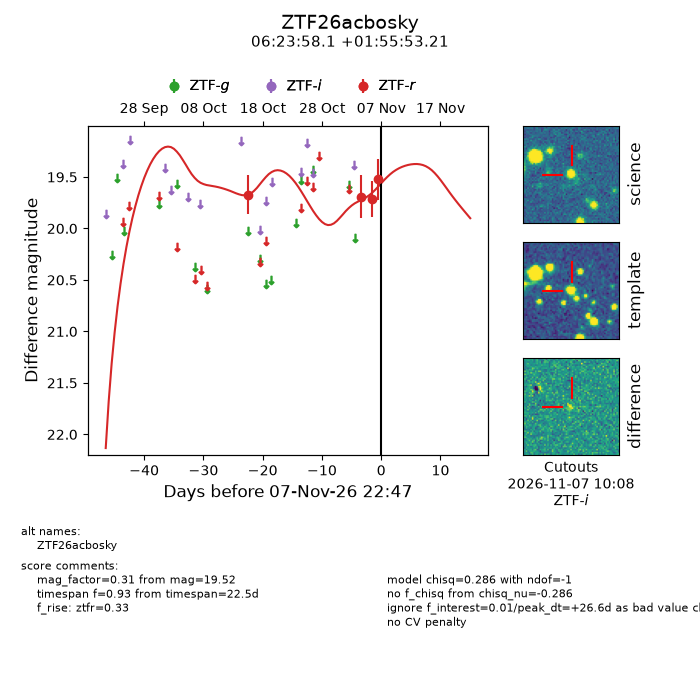
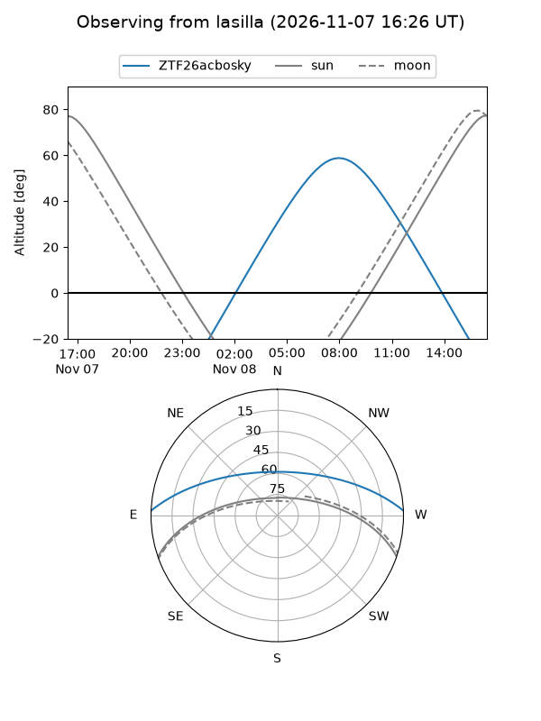
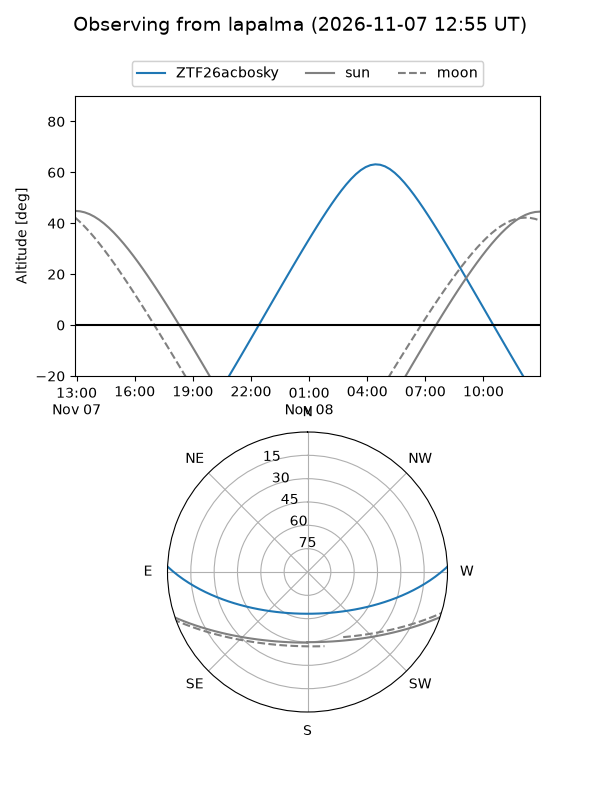
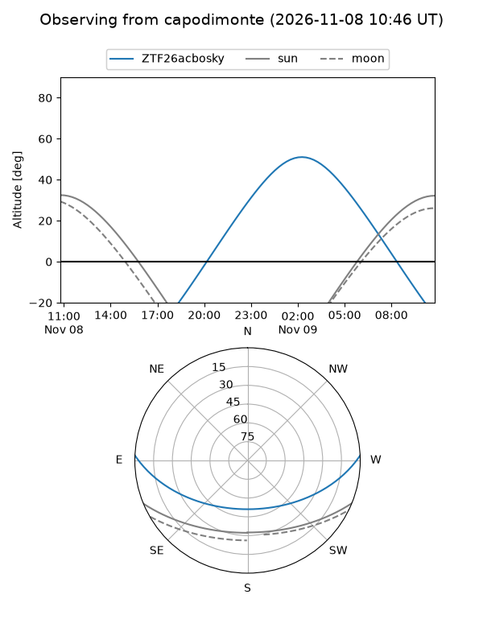
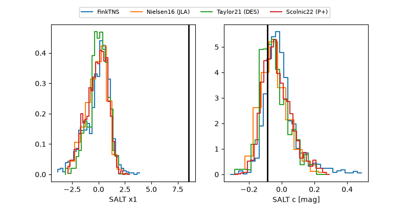

ZTF26acbosky
Target ZTF26acbosky at 2026-11-08 10:44
Aliases and brokers:
FINK-ZTF: ztf.fink-portal.org/ZTF26acbosky
Lasair-ZTF: lasair-ztf.lsst.ac.uk/objects/ZTF26acbosky
ALeRCE-ZTF: alerce.online/object/ZTF26acbosky
Direct TNS query: direct search
alt names
ZTF26acbosky (ztf,fink_ztf)
Coordinates:
equatorial (ra, dec) = 95.9920,+1.93145
equatorial (HMS+DMS) = 06:23:58.09,+01:55:53.21
galactic (l, b) = (208.0651,-5.22053)
Flags:
peak dt: +27.1
Photometry:
last ztfr=19.52
4 ztfr detections
Lightcurve

Visibility



Additional plots
